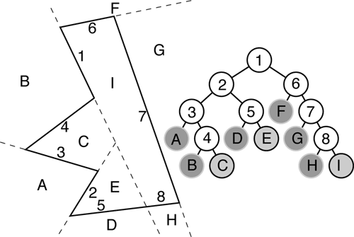

BSP Tree
Introduction and Background
Binary Space Partioning (BSP)-trees were first described in 1969 by Shumacker et al., it was hardly meant to be an algorithm used to develop entertainment products, but since the beginning of the 1990’s BSP-trees have been used in the gaming industry to improve performance and make it possible to use more details in the maps . The first game ever to use the technology was Doom, created by John Carmack and John Romero, two legends in the gaming industry. Since then almost all First Person Shooting (FPS) games have been using that technique.
BSP trees were first introduced to solve the hidden surface removal problem in real time. The original concept was developed for a static scene with a changing viewpoint; the classic computer game application, and it works as a two-phase process. In the first phase a BSP tree of the scene is constructed (once during the level build) and in the second phase the viewpoint is compared with this structure to determine visibility. BSP trees are not a graphic object representation, but a way of partitioning space so that we can solve certain rendering requirements in an efficient manner.
The need of removing polygons that are not visible has always been extremely high in the gaming industry, even though graphic cards evolve at gigantic rates and things that were true a couple years ago are not even remotely true these days. When a game is created a goal frame rate is set. The lowest acceptable rate on a target system use to be around 30 frames/second. A couple of years ago this meant putting out over 5000 textured polygons per frame could be too much. These days there are graphic cards in the market with the ability to draw hundreds of million of polygons per second during optimal conditions. Still there is a need of removing hidden parts. Why? Each hidden polygon that is drawn could be replaced by a polygon that is visible, hence increasing the detail in the scenes, making the game visually more attractive. The question is how far one should go to remove hidden polygons. To remove a hidden part heavy computations are needed to be done, such as view frustum culling and portal rendering. The CPU-time used to do these computations could be used to enhance other effects in the game, such as AI and collision detection. Hence there is a lot to take in to consideration when developing algorithms for removal of hidden surfaces. There are almost no games that go so far as to remove each polygon that is hidden. Most games are satisfied with the removal of whole sets of polygons, such as nodes, objects etc. They do not consider individual polygons, so it seems like the correct way to go is to accept some overdraw to limit the computations when removing hidden surfaces.
In reality, most computer graphics and three dimensional games applications are made up of scenes where the object compexity (number of polygons per object) is much greater than the scene complexity (number of objects per scene) and for the BSP Tree approach to be useful we have to deal with the polygons within objects rather than entire objects.
BSP trees are an extension of the painter's algorithm; which works by drawing all the polygons in a scene in back-to-front order, so that polygons in the background are drawn first, and polygons in the foreground are drawn over them.
A Binary Space Partition Tree (BSP Tree) is a very effective method to render scenes in a 3 dimensional game envoironment. A transversal of the BSP tree determines which objects in a scene are furthest from the camera. After which, the Game Engine will render the polygons in the order of furthest to closest, employing occlusion correctly, so that the player sees everything in a realistic manner.
A BSP Tree sorts the polygons into a tree of nodes quickly and efficiently at loadup, so then we can easily know which
polygons are furthest from the camera at run-time.
The Unreal Engine Core BSP Build Process
So, here's the explanation of the Unreal Engine BSP in a nutshell.
An average Unreal Tournament Level consists of several thousand polygons and only about 200-400 are on screen in each frame. This is a small portion of the overall polycount and the engine has to determine which polys are visible and which are not. The Unreal engine uses a data structure, the BSP (Binary Space Partition) for this process.
When you rebuild the BSP the BSP compiler starts splitting up the level. First it splits it into two halves, then it bisects these two halves and the resulting ones as well and so on...until it gets a very small split where a threshold facecount is reached. (and preferably it's convex) The cut planes are determined by the nodes which are assigned during the BSP compiling based brush geometry.
The parent child relation of the cuts shows a tree structure which can be used for the visibility checking of the polys. (→ Z-Buffering)
Example:
You have a box which is split into four halves by bisecting the box and the resulting smaller boxes.
- Box
- A
- A1
- A2
- B
- B1
- B2
- A
If you see only A1 then the whole B branch can be ignored. And the children of A2 as well. (If they existed) You can see that it's a fast process this way.
Here's another example of a BSP tree in 2D:

numbers are "nodes", letters are leaves. Note that nodes 5 and 8 combine to form a single polygon edge. |
The BSP is also used for collision detection. See also BSP Hole.
All solid and subtracted brushes use the BSP so they create BSP cuts and raise the nodecount. As you see the example I've shown you was really simple but if we are talking about thousands of polys then the amount of nodes is a very important influencing factor of the framerate. If you see more cuts the engine has to compute more to get the visible polys. In addition to this if the BSP is too complex you'll have greater chances for getting BSP holes.
The position of the cuts is also important. If their placement gets unbalanced then the resulting BSP tree will be deeper but less nodes will be needed. This means that the overall nodecount will be lower but some places of your map will have high occlusion times thus low framerates. The over-balanced tree is the other side of the problem.
You can control the cut balance through the Rebuild Options' first slider in UnrealEd, although it's generally not advisable to mess around with those settings because they are already set to the optimal values.
The second slider controls the priority of Portals when choosing the cut planes. A high priority will solve zoning issues where the zone portal can separate the two zones properly but it will break the "natural balance" of the tree. If you lower the priority then the portals won't alter the tree that much but you will get leaky zones.
Messing with these sliders, however, should be reserved for the High Wizards of UnrealEd. The default settings are almost always near-optimal and significant deviation from them can send your map into BSP Hole or performance hell.
Semisolid and nonsolid brushes don't create cuts in the BSP so they can be used for decorations without the risk of getting high nodecounts. On the other hand they can't hide objects behind them through the BSP so their rendering can be slower than for large solid brushes. They can also create collision errors for the same reason.
The BSP Tree is a static data structure, (it is pre-determined before the Level Map loads in Unreal Tournament), and stores information only about non-movable constructive solid geometry. Movers are not incorporated in the Level BSP Tree.
That's it for now. If I made mistakes or you have additions edit it...
I hope it's clear.
inio: seemed pretty clear, though there's a lot more going on for visibility determination than you talk about (it's actually a front-to-back process IIRC). Classically (pre-DOOM) BSPs were used only for depth sorting in early flat-shaded games and CAD apps as the sorting stage of a painter's algo, so you're correct to that extent.
BSP Tree Frequently Asked Questions
For more information on BSP Tree Methods, read this website page on: [BSP Frequently Asked Questions]
An excellent technical paper on the BSP Tree process as used in 3D games can be found at:
[Binary Space Partitioning Trees and Polygon Removal in Real Time 3D Rendering]